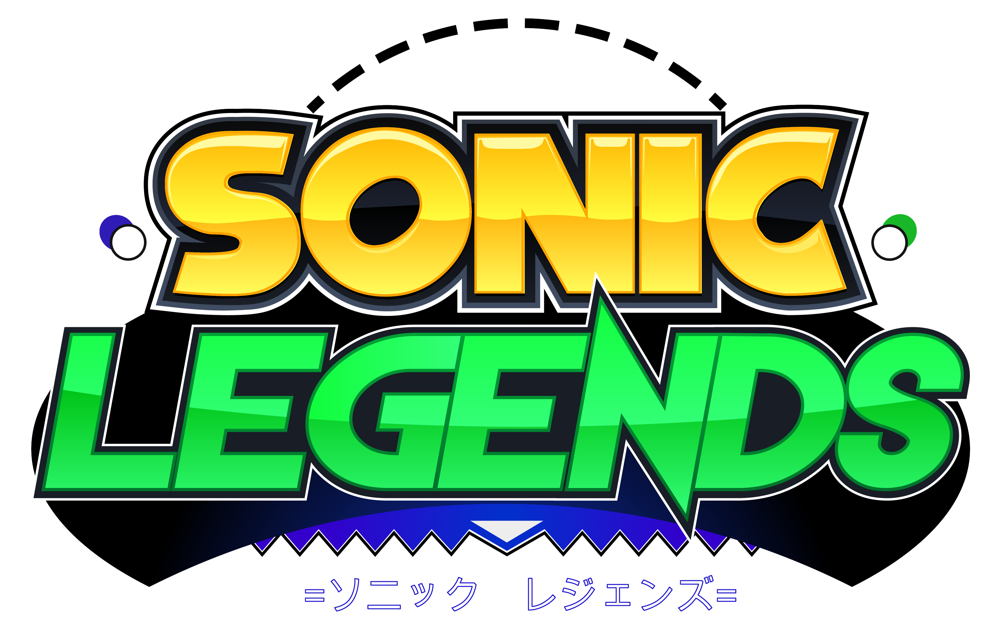

UltraRing Logo here


Link Here
Fonts & Stylization are WIP (if time allows lol)
Sonic Legends is an unofficial, non-profit fan project inspired by the 2D Sonic the Hedgehog series of games. Its main goal is to update and re-invent over 20 year of history within the Sonic fangaming scene.
Beginning development in late 2017, Sonic Legends has gone through many iterations. Starting out simple as a modification for Sonic Mania, it is currently developed as a fully-fledged project within Game Maker Studio 2.
Every featured Zone has been re-imagined for a modern outing by redesigning them from the ground up in all aspects, adding flair and polish similar to 2017's Sonic Mania.
============STORY============== (make this "banner" look good later)
The nefarious Dr. Eggman is at it again!
Just off the trickling coast at the edge of Sonic's birthplace, Christmas Island, stands the glorious Sunrise Gate, as well as the power source embedded deep in its majesty, Phossil - which the persistient doctor plans to use for his dastardly schemes.
The Nexus Dimension is a converging point spanning an infinite amount of timelines that are all derivative of Sonic's prime world. The environments in this strange dimension have significance in these separate timelines, merged together into one landmass. It was created as a failsafe for the Chaos Emeralds to escape to, should there be too much danger in their presence...
Dr. Eggman learns of this new dimension. Having past knowledge on the Chaos Rings, which can create pillar energy connecting the Master Emerald, Eggman tries to make an artificial version specifically for the purpose of traveling between those dimensions using his experimental Dark Ring technology as the basis, hoping he can get in there without issues. All he needs left in order to begin his experiments is a Chaos Emerald.
With no facility left to mass-produce Dark Ring energy, the scientist's next best stop for fueling his dark rings would be returning to the liquid-based power source, Christmas Island's own Phossil. Sonic the Hedgehog, after being informed about a number of tidal waves coming out from his birthplace island, sets off to investigate this strange phenomenon...
Go, Sonic! Everyone is counting on you!
The luscious environment from Sonic Overture returns as Sonic and co. start their latest adventure on Christmas Island! The mad doctor’s old Phossil-powered Badniks may still be around to give the group a cold welcome back party!
Hey! I think one of the locals is following along...

Sonic Legends is a fan project and is not affiliated with SEGA in any way, shape or form.
ALL FAN GAMES FEATURED BELONG TO THEIR RESPECTIVE CREATORS!
NO FINANCIAL GAIN IS BEING MADE FROM THIS PROJECT.